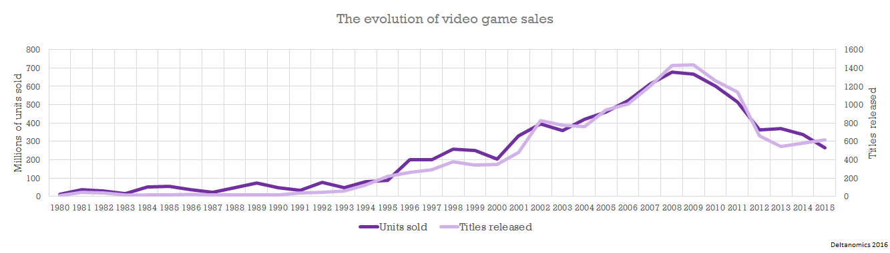
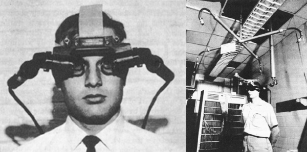

Advancements of 3D Environments and CGI in Media
By: Arina, Eric, and Victor
Press F11 for fullscreen
Navigation
This presentation is navigated through the arrows in the bottom right corner of the screen.
Within each section, vertical arrows such as the ones on this slide will be shown. This means that there are vertical slides available to expand on a certain pages content. This is how you navigate each section.
Give it a try!
Nice Work!
Now click the RIGHT arrow to advance!
Welcome!
This web-based presentation is the final documentary project for IMD4002A.
It covers the history and advancements made in 3D environments and CGI in media, as well as how these developments have impacted culture as we know it.
Agenda
Through this presentation, we aim to answer the following questions:
- Where and why are virtual environments used?
- What is the major historical developments of CGI and 3D Environments?
- How are these technologies being used today?
- What threats could the use of these technologies present?
The Origin of 3D Virtual Environments
In this section, we cover the origin of Virtual Environments and some of their early applications.
What are 3D virtual environments?
A Virtual Environment is defined as "A central interface the software that creates an interactive and immersive experience for administrators and users".
Can you guess what the most common applicaton of 3D virtual environments are?
Video Games!
When did the first signs of virtual experiences surface?
-
1960's : Electro-mechanical games called Periscope and Crown Special Soccer within arcade environments.
-
1970's - 1980 : Atari releases multiple games and take the gaming world by storm, allowing for virtual arcade integration into bars, malls, etc.
- This now meant that virtual environments could have both entertainment and social value within gaming/social cultures. -
Early 1980's : The personal computer is introduced allowing creating potential for the internet and networked collaboration through software systems.
Arcades and their Social Implications
Take a look at the video HERE.
This video, highlighting a mirade of arcade environments from the 1980's, is a good example as to how popular these virtual interactions were.
These arcades provided:
- Fun social interaction;
- Education on new technologies;
- Exposure into newly created immersive entertainment;
- Spark interest within young people for the world of virtual technologies;
Arcades and their Social Implications Cont.
As evident throughout history, video games and their interactive environments led to entertainment for the masses!
As clearly evident by this graph, demand for video games has nearly always been able to keep up pace with the amount released. We see a particularly large spike towards the mid 2000's in both interest and demand.
So..... What comes next?
Surely, arcades alone can't be responsible for this growth right?
Correct!
The Year of the Computer!
The year was 1982, and TIME Magazine took a contravercial stance by choosing a "machine of the year", rather than a "man of the year".
Their yearly piece came out at a time when PC sales were rapidely increasing, dubbing the timeframe a name of: "The PC Revolution!"
This title properly fit the time period due to the crazy sales numbers of personal PC computers.
In 1982, over 3 million units were sold!
The Internet
Now a days, the internet can seem like a scary place, but the internet started out as a military project in the late 20th century. When the web turned open source, the internet introduced the world to a land of virtual connectivity!
Suddenly, the possibility of virtual multiplayer games and conjoined interconnected systems became a very real possibility.
Some of the earliest online games include:
- SGI Dogfight
- XTrek
- Pathway to Darkness
- Doom
Summary
In this section, we covered just some of the ways 3D technology and an interest in its first advancements were sparked within our culture. From the first video game consoles where in-person multiplayer became possible, to the first personal computers coming out and opening up a world of interconnected opportunity, we see these events impacts in our daily lives.
Up Next: The history of Virtual Reality
Click the RIGHT arrow to advance to the next section.
The Technological Evolution of VR
(Arguably the most popular type of interactive 3D environment system ever)
In this section, we will delve into the history of one of the most intriguing 3D environments we have available to us today.
What is Virtual Reality?
Virtual Reality:
The computer-generated simulation of a three-dimensional image or environment that can be interacted with in a seemingly real or physical way by a person using special electronic equipment, such as a helmet with a screen inside or gloves fitted with sensors.
What is Virtual Reality? Cont.
Now, in the 21st century, we commonly see virtual reality headsets and large game companies come out with games solely tailored for their use.
But, where did these decives start? For that answer, we need to go back to the mid 20th century to a cinematographer named ...
Morton Heilig
Sensorama
Morton Heilig, a cinematographer, created the first virtual reality experience for public consumption called “Sensorama". It resembled a mix between an eye exam machine and a photobooth. There were 6 short films created where users would be bombarded with stimuli at certain points in the presentations.
This relatively primative device was the first publically available virtual reality experience!
Morton Heilig Cont.
Later into the 1960's, Morton Heilig was at it again, creating what one of the worlds first head-mounted masks!
This mask coined the name of "The Telesphere Mask" and contained wide-vision, sterio quality sound and adjustable components to better fit a users head!
Some modern VR headsets can't even manage that!
It is safe to say that Morton Heilig set the stage for advanced Virtual Reality technology to become a reality.
Military Introduction
As we moved through the 1960's, we see the military take particular interest in head tracking and flight training implementations of this technology.
Two engineers named Comeau and Bryan created the first motion tracking head mounted display with built in video screens for each eye and a head tracking system.
This was not virtual reality however. It allowed to look at remote, hazardous situations. A remote camera imitated the head movements so the user could look around the setting.
Birth of the Concept: Virtual Reality
In 1965, the scientist Ivan Sutherland, presented his vision of the "Ultimate Display". The concept was of a virtual world viewed through an HMD which replicated reality so well that the user would not be able to differentiate from actual reality.
“The ultimate display would, of course, be a room within which the computer can control the existence of matter. A chair displayed in such a room would be good enough to sit in. Handcuffs displayed in such a room would be confining, and a bullet displayed in such a room would be fatal. With appropriate programming such a display could literally be the Wonderland into which Alice walked.”
Simulation and Simulators!
In 1966, Military engineer Thomas A. Furness III created a flight simulator. It was created specifically for training purposes for the U.S. Air Force
This project was specifically valuable to the evolution of this kind of technology due to the amount of funding provided by the U.S. military.
Interactivity!
Moving forward to the mid 1970's, the first interactive virtual reality platform was created. It was displayed at the Milwaukee Art Center and dubbed the name "VIDEOPLACE".
The simplistic system used a combination of cameras, projectors and sensors to generate silhouettes that immitate a users actions.
VIDEOPLACE set a precedent for what interactive systems were possible with virtual reality.
Gaming Made Possible
Moving through the 1980's and into the early 1990's, we see a VR system released to drive the Mars Rover called Virtuality. These were the first mass-produced VR systems.
This initial invention showed the public the gaming industry was a viable domain for virtual reality technology.
Unfortunately, the device never really took off and is known as an innovative VR device created two decades too early.
Advancements!
The most common type of VR innovation through the majority of the 1990's were large game companies taking cracks at developing gaming headsets.
Some of these companies include:
- Nintendo
- SEGA
- VictorMaxx
- Virtual IO
- Forte
The 2000's Lull
Virtual Reality innovation took a back seat to tradition media with the introduction of advanced cell phones, larg-scale internet services and big-screen televisions. Suddenly, there was no real interest in virtual reality innovation from a consumer stand-point.
Software Implementations
Between 2000 and 2010, we see a real shortage of game-related Virtual Reality integration into tech markets. Instead, large companies such as Google move towards practical implementation of VR technologies.
Google implements two technologies. Google Street-View and Stereoscopic 3D Street View from 2007 to 2010.
These technologies proved to users worldwide how virtual reality could be implemented into their daily lives.
Check out this video to learn about its current state.
Modern Headsets
2012 marked the start of the return in the VR gaming industry. The launch of the Oculus Rift Kickstarter and its purchase by Facebook for over 2 Billion dollars in 2014 was a verificational stamp of approval for the resurgence of VR gaming.
.jpg)

Modern Headsets Cont.
By 2016 hundreds of companies were developing VR products. Most of the headsets had dynamic binaural audio.
Most gaming headsets used a combination of touch and haptic interfaces.
Companies leading the charge while developing their own VR headsets indlue: HTC, Google, Apple, Amazon, Microsoft Sony, Samsung
Summary
In this section, we delved into the roots of Virtual Reality, its realted integrations into society and some reasons as to why it was pushed to the side in the past.
Up Next: How CGI and 3D graphics are Being Used Today
Click the RIGHT arrow to advance to the next section.
How CGI and 3D graphics are Being Used Today
In this section, we will discuss CGI and virtual environments are used in todays modern world.
What is Computer Generated Imagery?
In recent years, CGI has been the go-to visual effect for most major movies, whether its use is subtle or obvious.
So this begs the question, what is CGI exactly?
To put it simply, CGI is the application of the field of 3D computer graphics to special effects in film, television, video games, etc.
How does CGI work?
CGI is a rather advanced topic. It combines 2D imagery (objects, background, environments) width 3D objects within specialized computer programs. When done properly, it creates composite imagery that ticks the eye into believing in the illusion depicted.
CGI at work
Here are some great examples of how 3D computer graphics is used to add fictional characters, create backgrounds, change the mood and completely overhaul a scene.
CGI at work Cont.
The Subtle Art of Seamless CGI
CGI has become synonymous with massive tent-pole blockbuster films such as Avatar, Interstellar, Avengers: Endgame. However, where CGI becomes truly impressive is when it's used as the "supporting act".
With the ability to edit every single pixel of a movie, filmmakers can take a more subtle root to enhance their films in ways previously unobtainable.
CGI is an Art Form
The beauty is that CGI can be used to help remove unwanted backgrounds, change the mood of a scene, fix errors, change locations and even add a tear to help improve an actors performance.
Here are some examples of how CGI has been used in run-of-the-mill scenes:
CGI is an Art Form Cont.
Here are some examples of how CGI has been used in run-of-the-mill scenes:
What is required
The art of computer graphics is extremely technical and requires teams with hundreds, often thousands of highly skilled artists. The problem is that as CGI improves in movies, so do the viewers.
Viewers become critics and can start picking out CGI that is not perfect and scream for the skies and make sure everyone hears it.
The good news is that studios have - for the most part - realised that story is king, not CGI. Computer graphics is there as a tool to tell a story and it should never be the reason for creating a film in the first place.
Bad CGI
Now, while we have realized CGI does not make a good media piece, we know for certain is can ruin one if implemented poorly.
Click the following links to view some examples of very poorly implemented CGI:
Summary
In this section, we conducted a comprehensive analysis of what CGI is, what it is used for and why it is valueable to our society. Overall it is an incredible advancement in modern media and provides a plethora of entertainment value.
Up Next: Threats these modern technologies could pose to our society
Click the RIGHT arrow to advance to the next section.
Threats these modern technologies could pose to our society and culture
In this section, we will discuss ways modern graphics technology integration into society creates complex challenges for our culture. In particular, "The Uncanny Valley".
It's Uncanny! - Disclaimer
For this section, there are pleanty of areas we could focus on. For this particular research project, we have chosen to emphasize a concept known as: The Uncanny Valley
What is the "Uncanny Valley"?
The Uncanny Valley was a term first coined by a professor by the name of Masahiro Mori during the 1970’s. It correlates to the relationship between the reaction’s humans feel when interacting with realistic versus non-realistic humanoid robots.
In a more realistic looking humanoid robot, often people would be left feeling creeped out and would provoke an uncanny feeling within them.

Where do we see the Uncanny valley?
The phenonemnon of the uncanny valley is ever present in most production level media forms we consume today.
We see examples of the uncanney valley within Film, Television, and on internet media sources. Anything that triggers that "uneasy" feeling while comparing real world event to CGI comparables.
So, what is the problem?
Potential problems lay within the idea that a realistic humanoid robot's could eventually become indestinguishable from a real life human being.
This opens the door for issues such as impersonations leading to social issues within our delicate western social fabrics.
"Deepfakes"
Deepfakes are a type of output produced when artificial intelligence and deep learning are utilized to create realistic digital versions of events, interactions and human behaviour.
Likely areas of deepfake use include:
- Explicit online materials (i.e. pornography)
- News and political commentary
- Social exploitation through social media
"Deepfakes" Cont.
Socially, as deepfakes become more and more prevelent on online resources, they can raise numerous red flags in terms of social and cultural threat potential.
Some threats could include:
- Social manipulation (i.e. bullying, blackmail, etc.)
- False political action towards rival powers
- This type of action could have serious international incident potential
- Industry impacts (i.e. Deepfakes depicting large company executives making false claims)
- Could lead to stock and major share value increases or decreases.
As you can see, the uncanny valley saves us from believing fake depictions of our leaders, public figures, and loved ones are a reality.
Uncanny Integration into CGI
This concept of an uncanny valley can be integrated into computer generated interfaces as well. In this medium, it would refer to when a photorealistic environment does not feel "exactly" right and does not conform to how we characterize the physical world in our lives.
The main question regarding the uncanny valley and all its implications is the question of will it exist in the future?
Try an uncanny valley test!
Take a look at this image. Can you tell which side is real and which side is pure CGI?
This is just one example of how the uncanny valley can be very hard to distinguish within modern applications of CGI.
Erasure of the uncanny
As we advance CGI technologies, we have started to see the uncanney valley narrow and nearly dissapear in several instances of CGI interpolations.
Some CGI artists and high profile industry professionals believe it is important for us to be able to tell the difference between real world events and CGI events for artistic, social, and cultural balance.
We should enjoy media as an entertainment medium and not run the risk of it being leveraged to cause harm.
Summary
In this section, we took a look at how CGI and its modern implementations (specifically the effect of the uncanny valley) could have adverse effects on populations throughout the modern world. We touched on cause and effect relationships and depicted how closely CGI humans can appear to being real-world.
Click the RIGHT arrow to advance to the next section.
References
- Dictionary.com. (n.d.). Visual effect. Retrieved February 21, 2021, from https://www.dictionary.com/browse/visual-effect
- Store, P. (2017, April 20). Projector screen store. Retrieved February 21, 2021, from https://www.projectorscreenstore.com/store/blog/2-Projector-Screen-Store-Blog/The-Evolution-of-Green-Screens
- Gress, Jon (2015). Visual Effects and Compositing. San Francisco: New Riders. p. 23. ISBN 9780133807240. Retrieved 21 February 2021.
- Thompson, A. (2017, November 14). How James cameron's innovative new 3d tech CREATED AVATAR. Retrieved February 21, 2021, from https://www.popularmechanics.com/culture/movies/a5067/4339455/
- Suderman, P. (2019, October 11). Gemini man is an extended visit to the uncanny valley. Retrieved February 21, 2021, from https://reason.com/2019/10/11/gemini-man-is-an-extended-visit-to-the-uncanny-valley/
- Smith, Alvy Ray (August 15, 1995). "Alpha and the History of Digital Compositing" (PDF). Retrieved February 21, 2021.